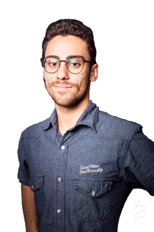

I have always been passionate about inventions and innovations : rockets, social networks and robots. My personal goal is to create something that will be useful to other people.
WHOAMI

CYBERSECURITY
I've always been a big fan of the computer world, especially because of the video games that were very present during my childhood, then I discovered programming during my last year of high school and that's what made me realise how fun and satisfying computer science could be. So for 3 years I carried out many programming projects, starting with projects in Caml, C, C++, Java and even BASIC to start up microcontrollers. Then I discovered the world of cybersecurity, and I found it fascinating. Learning and understanding intrusion techniques to better protect myself and others from them is what makes me enjoy working in cybersecurity today.
PROJECTS
Parkinson disease detector
If we had the possibility of detecting Parkinson's by voice, that would be great. This is the thought that crossed our minds the day we decided to work on a system to detect Parkinson's using a person's voice.
To achieve this project we thought a lot, we wanted to make an application that uses real medical data, and we also wanted this application to be able to be improved. We therefore set ourselves the goal of creating an open source library as well as demonstration software.
After two months of thought and hard code we have successfully created our Machine learning library to load a trained model and make predictions on user's WAV file to know if he got parkinson. This library uses the principle of classification through Linear Regression.
The library currently uses a database containing 74 samples, which is not enough to have a good reliability, but not having found other data sources we decided to be satisfied with a precision of 60 % for this project.
Once the library was built, we had to set up software to present our project. This step was quite fast, we just had to create an office software in Python allowing a person to provide a .wav file to test or to directly use his microphone to find out if he has Parkinson's or not.
For more details I advise you to consult our Github project.
MazeRunner
What if we tried to revive a game from the 1980s like Lode Runner? That's the challenge we set ourselves when we wanted to create a video game in Java.
This project is my first game, as well as my first big project in Java. The principle is simple: create a Mario-style platform game, with 3 autonomous enemies and different objects such as teleporters, ice zones, ladders, etc.
This game required a lot of time, understanding and coding. I had to learn and understand the sprite sheet system, the collision system, but also the setting up of the "AI" for each monster.
In the end it took almost 2 months of intensive programming to achieve the desired result, I can say that I am very proud of the result.
Don't hesitate to go and see the github of the project for a demonstration.
HOBBIES
Sport
I love doing sports. My parents enrolled me in many sports from a very young age. I went through Judo, track and field, basketball, volleyball and I also swam for 8 years because I love this sport so much. In the beginning I liked individual sports because it allowed me to exercise without taking into account external factors, but at high school I discovered the joy of being able to practice group sports and I understood how much fun it could be to do sports in a group. It's this state of mind mixing competition and mutual aid that I try to apply to all my group projects, so that I can get the best out of them while having fun.
Japan
How could I define my interest in this country. I've been very much influenced by Japanese culture, especially by manga, but also by paintings, photos, videos and all the articles I read about the Land of the Rising Sun. Even today I still believe that Japan is one of the most beautiful countries I have ever visited, whether it be in terms of culture, technology or landscapes.
Creation
I love creating things with my own hands, like this site. I started with lego, then with the assembly of computers, until I created a real robot capable of moving autonomously and orienting itself using a system of infrared beacons. The fact that I try to understand, innovate or even invent and then achieve my goal in a concrete way is what makes me happy.